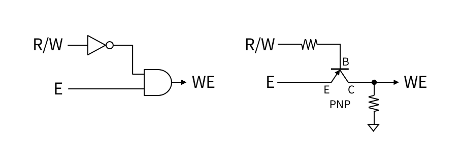

Capturing Screen of KS0108 (SG12864)

Using LcdTap-Pico2 Universal
Connection
The KS0108 has two CS signals, but LcdTap has only one, so we use the RST pin as CS instead.
Also, LcdTap does not have an R/W signal, so we take the logic of R/W and E signals and input them to the WE pin. If R/W is fixed Low, you can connect the E signal directly to the WE pin.

For displays with 5V interface, a 5V-3.3V level converter is required.
| LcdTap (Pico2) | KS0108 (SG12864) |
|---|---|
| GND | GND |
| GPIO0 (RST) | CS1 |
| GPIO1 (CS) | CS2 |
| GPIO2 (WR) | E and not R/W |
| GPIO3-10 (D0-D7) | D0-D7 |
| GPIO11 (DC) | I/D (R/S) |
Configuration
Load the "KS0108" preset.